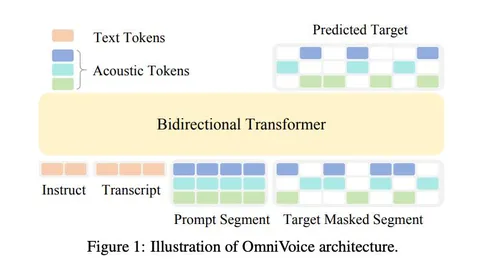

Сегодня разбираем OmniVoice — мультиязычную zero-shot TTS-модель на базе дискретной диффузии. Авторы заявляют поддержку 646 языков, но качество проверяли только на 102, поэтому для всех 646 оно не гарантируется.
Модель быстро набрала популярность, и появилось много пользовательских интеграций и демо. Авторы также показывают быстрый инференс и конкурентное качество синтеза.
Что происходит архитектурно.
Обучение стандартное для masked diffusion. Часть токенов случайно заменяют на MASK-токены и учат модель восстанавливать исходные. Одно из ключевых нововведений — full-codebook random masking. Отдельные токены независимо маскируются по всей матрице восьми кодбуков, а loss считается сразу по всем замаскированным позициям.
На инференсе целевая матрица изначально заполнена MASK-токенами. На каждой итерации Transformer предсказывает значения для всех ещё закрытых ячеек. Значения токенов выбираются жадно из распределения с classifier-free guidance, а позиции для раскрытия семплируются через Gumbel-Top-k с учётом confidence и штрафа за глубину кодбука. Раскрытые токены больше не маскируются и на следующем форварде служат дополнительным акустическим контекстом. По умолчанию выполняется 32 итерации.
Обучалась модель на 581 тысяче часов аудио из опенсорса. После английского и китайского языков в данных идёт огромный длинный хвост, поэтому авторы используют language-level resampling, чтобы немного повысить вес редких языков.
Модель также умеет управлять характеристиками голоса, задавать паралингвистические теги и произношение отдельных слов. При этом voice design обучался преимущественно на китайских и английских данных и для низкоресурсных языков может работать нестабильно.
В итоге получилась простая диффузионная схема, которая масштабируется на сотни языков и показывает неплохое качество. Код и веса открыты — можно идти и пробовать.
Александр Плахин
